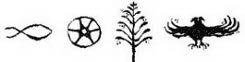

Ahmet Şerif İzgören
Ahmet Şerif İzgören, 1965 yılında İzmir’de doğdu. Çocukluk yılları İzmir, Bursa, Çankırı ve Konya’da geçti. Bütün büyükleri Manisa’nın Demirci ilçesindendir.
Sokaklarda oyun oynayarak, arılardan kaçarak büyüdü. O zaman renkli televizyon ve bilgisayar yoktu. Tabii ki bilgisayar oyunu da yoktu. Bir gün kovboy, bir gün korsan oldu. 2004 yılında arkadaşlarıyla birlikte Türkiye Uğur Böcekleri Projesi’ni başlattı. Türkiye’nin dört bir yanına gidip Uğur Böcekleriyle birlikte okullarda, Çocuk Esirgeme Kurumlarında ücretsiz eğitimler verdi. Belki bir gün sizin okulunuza da gelebilir. Onu görürseniz hiç çekinmeden yanına gidip tanışabilirsiniz.
Yazarın yayımlanmış on yedi kitabı var.
Facebook sayfasından Ahmet Şerif İzgören’e,
www.ugurbocekleri.org’dan Uğur Böceklerine ulaşabilirsiniz.
